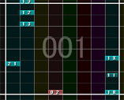
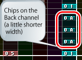

| Basic operations |
|---|
| Put or delete chips |
(1) Go to the edit mode.( )
)
(2) Select the chip you'd like to put from the WAV list.
(3) Left click on the score to put the chip.
In the edit mode( ), Right click the chip to delete it.
), Right click the chip to delete it.
In the select mode( ), select the chips by dragging and push Del key to delete them.
), select the chips by dragging and push Del key to delete them.
Change "Guide margin" to change the division of the bar to arrange chips
Guide margin = 1/4
Guide margin 1/32
Ctrl + Left click to put a chip onto the back channel. The chip on the back channel has a little shorter width.
